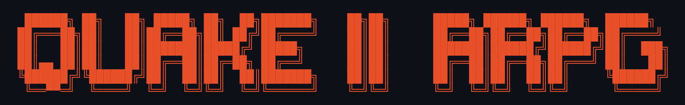
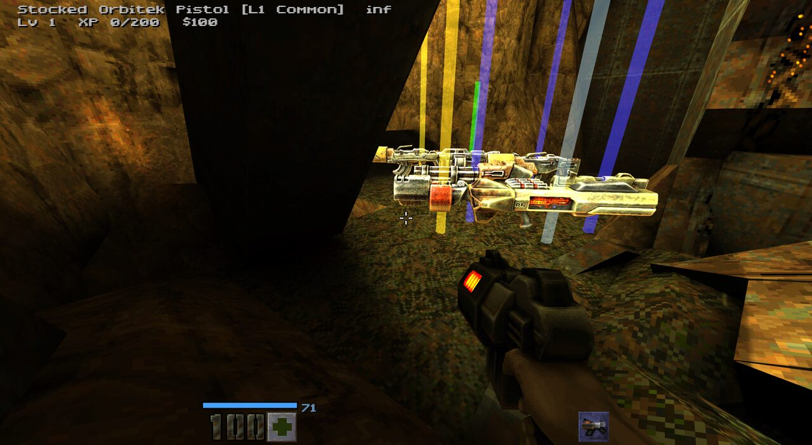
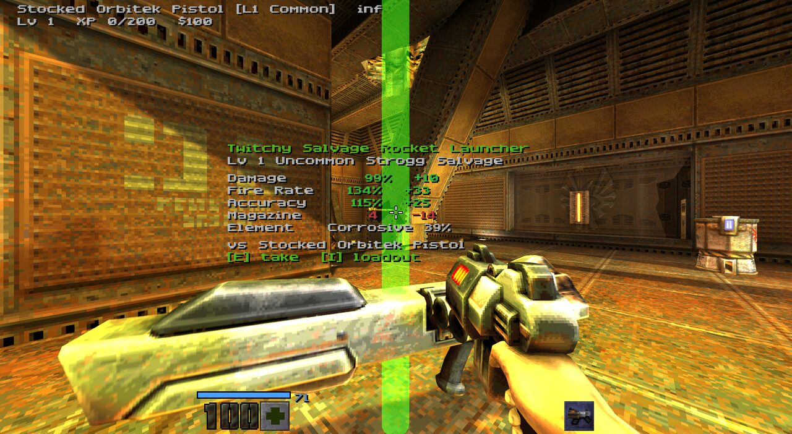
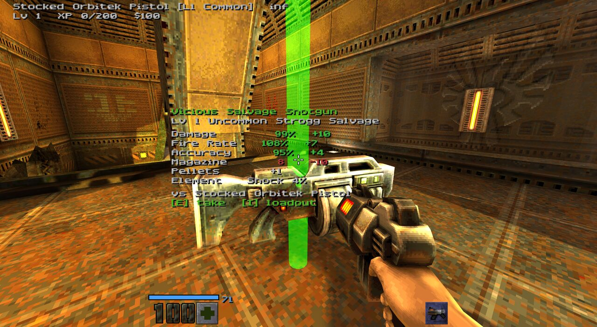
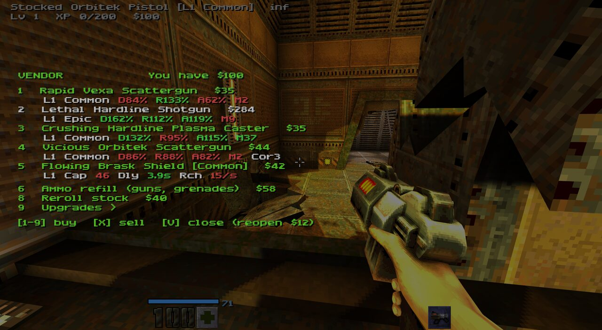
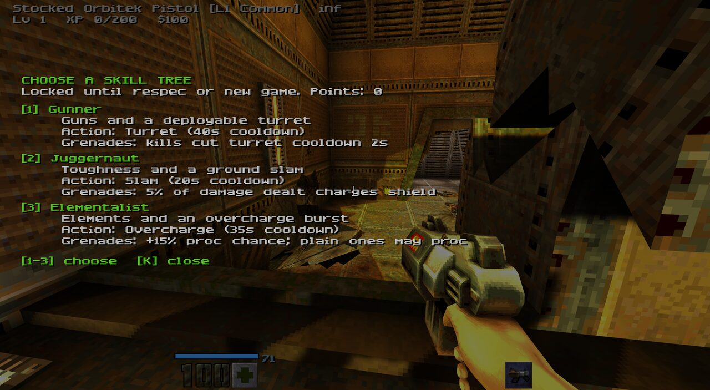
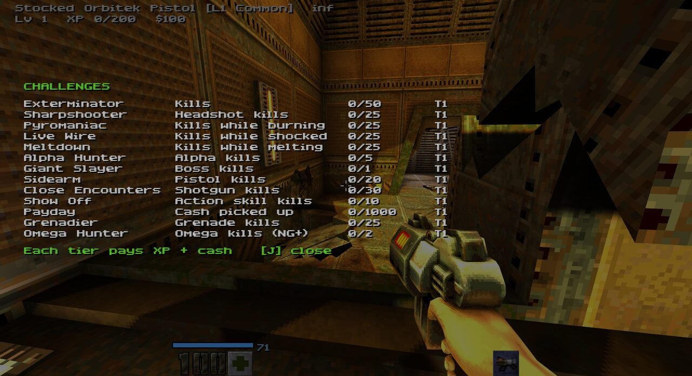

Kill. Loot. Level up. Repeat.
A free looter-boomer-shooter mod for the Quake II rerelease. Every gun is rolled with a rarity, a maker, parts and sometimes an element. Level up, pick a skill tree, shop at vendors, chase challenges and replay the campaign in New Game+.
Monsters drop guns rolled from a maker, parts and stats. Walk over one to see its card and compare it with yours.
Fire burns, shock staggers and cuts power armor, corrosive melts and makes targets take more damage.
Gunner, Juggernaut or Elementalist, each with its own action skill: a turret, a ground slam or an overcharge burst.
Rechargeable shields with their own rolls. Some burst into an elemental nova when they break, or spike monsters that hit you in melee.
Frag, Cluster, Sticky, Vortex, Leech, Hopper and Airburst. Legendary mods get a twist.
Sell loot, buy guns, ammo and permanent upgrades, level guns up at the workshop, and buy a Second Chance at life.
Elite monsters with better drops. In New Game+ they roll random traits, and the rare Omegas guarantee a Legendary.
Kill goals that pay XP and cash. In New Game+ a fourth tier drops a Mythic reward and a permanent badge.
Finish the campaign to start again with tougher monsters, Mythic gear, a level cap of 60 and a modifier on every map.
Single-player and co-op, including split-screen. Each player gets their own drops and cash.






Needs Quake II (the 2023 rerelease by Nightdive and id Software) on Steam.
rerelease folder. In Steam, right-click Quake II → Manage → Browse local files, then open rerelease.q2rpg folder sits next to baseq2.+set game q2rpgUninstall: delete the q2rpg folder and clear the launch option. Your normal Quake II saves are untouched.
The full guide, options and troubleshooting are in the README.
This is an alpha, and player feedback shapes where it goes next. Got an idea for a new gun, skill, monster twist or map modifier? Think something is too strong, too weak, or just not fun?
Q2ARPG already works with custom maps and campaigns: put your .bsp files in q2rpg/maps/ and loot, XP, elites, challenges and map modifiers apply automatically. Entity keys for placing vendors, guaranteed drops and bosses are planned after the first release.
To the teams at id Software and Nightdive Studios: thank you. Quake II has given us decades of memories, and the rerelease and its game source kept the door open for modders. None of this would exist without your hard work. This mod is dedicated to you.